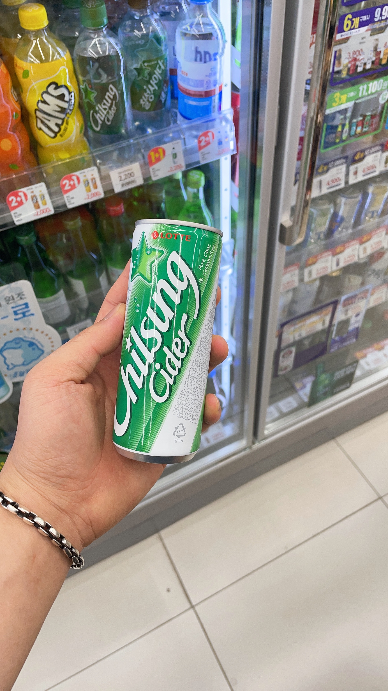

Overview: 장애 플러스 기술 해커톤 대회를 위한 데이터셋 수집
2023 장애인 분야 해커톤 대회에 참가를 확정 짓고 이제 본격적으로 모델 구축과 학습을 세팅해야 한다…! 제일 큰 난관이 데이터셋 수집이다.. 일단 구글링을 해본다.. 근데 너무 올바른 이미지만 가득하다… 내가 원하는 이미지가 아니다. 그래서 결국 고민에 고민을 거듭하다 직접 사진을 찍어서 데이터셋을 수집하겠다고 결심을 한다… 하.. 정말 데이터셋 수집과 labeling이 제일 귀찮은 작업이다. 시간도 많이 잡아먹힌다.. 일단 사진을 찍기 위해선 편의점에 들어가서 냉장고에서 음료수를 꺼내 사진을 찍어야 하는데 한 두개의 음료수만 수집할 것이 아니기에 고민이 많이 되었다. 결국 집 앞의 이마트 24 편의점 사장님과 그래도 나름 안면은 있는 사이라서 정말 간절하게 양해를 구하면서 부탁을 드렸다.. 이야기하자면 길어져서 음료수 사진을 찍어도 되냐는 결론부터 말씀을 드렸더니 처음엔 당연히 안된다고 하셨다가 이유를 물으셨다. 사실 이러이러한 대회에 참가를 해서 이러한 주제를 선정했는데 이걸 하기 위해서는 음료수 사진을 수집해야 돼서 정말 부탁드리겠습니다… 라고 하니 흔쾌히 허락해주셨다. 정말 감사해서 폐기 위기나 잘 안팔리는 물건을 사가겠다고 말씀을 드렸다. 사장님께서 허락은 하시긴 했지만 그래도 눈치가 많이 보였다. ㅜㅜ 손님들도 있었고 해서 얼른 대충 20개 정도의 음료수만 각 10장 정도 사진을 찍고 2만원어치 인스턴트 음식을 샀다. 사실 20개 음료수만으론 턱없이 부족했다. 그렇다고 또 가서 부탁을 드리기에도 죄송스러웠다. 결국 부모님에게 SOS를 쳤다. 어머니가 오산시 농아인협회 지회장으로 계시는데 그래도 꽤 오산에서 인맥은 있으셨다. 며칠이 지나고나서 어머니에게 연락이 왔다..! 어머니 지인 분의 지인 분이 오산 농협 조합장으로 계셔서 하나로마트에 가서 실컷 사진을 찍으란 것이었다..! 정말 기분이 좋았다. 그래서 오산 하나로마트 본점으로 달려가 사무실에 계시는 지점장님을 찾아가 감사하다고 인사 드리고 데이터셋 수집을 했다. 이때도 눈치가 많이 보였는데 사실 직원분들은 본인 할 일 하시느라 난 1도 신경을 안쓰시는 것 같아 마음 편하게 데이터 수집을 했다. 이 경험을 계기로 무슨 일이든 되든 안되는 일단 부딪혀보고 안되면 도움을 요청하는 것이 맞다고 많이 생각을 했다.